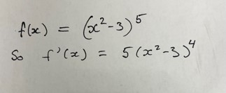

Ryan Watson
An Introduction to Sheaves and Their Stalks
December 7
Sheaves are an integral part of algebraic geometry, but have you ever wondered why they were given the name they have? Or maybe you're wondering what even is a sheaf? Well, the agricultural definition is a bundle of grain stalks laid lengthwise and tied together after reaping. This seems like a rather odd thing to name a mathematical object after, but in this talk I hope to give some motivation as to why sheaves are called sheaves and why this name makes sense. I will go over the definitions of presheaves, sheaves, and their stalks, as well as cover some useful examples and basic facts about them. If there's enough time, I'll also talk about how to sheafify a presheaf into a sheaf.
Juliann Geraci
A Basic Intro to Neural Rings and Ideals
November 30
Neural codes are the brain’s way of representing, transmitting, and storing information about the world. Combinatorial neural codes describe a pattern of neural activity in terms of which neurons fire together, opposed to the precise timing or rate of neural activity. Combinatorial codes can be analyzed using an algebraic object called the neural ring.
In this talk I will give combinatorial background in order to introduce neural rings and ideals. We will explore the basic uses of algebra in mathematical neuroscience through examples and correspondences.
Zach Nason
Symbolic Powers and Monomial Ideals
November 16
Symbolic powers of ideals are an important and commonly used tool in commutative algebra and algebraic geometry. In my talk, I’m going to quickly build up the definition of a symbolic power, and then show how to calculate symbolic powers and primary decompositions for monomial ideals. In order to do this, I’ll define Stanley-Reisner ideals and Alexander duals, and prove how to construct symbolic powers and primary decompositions from these ideals. If I have time, I’ll also spend a few minutes going over the Packing Problem.
David Lieberman and Wolf Allred Echalaz
Bernstein-Sato Polynomials: Doing the Power Rule on Arbitrary Polynomials (a WD-algebra production)
November 9
Picture this: It is week 9 of the semester and you are teaching a 106 recitation and you go check in on a table of students. As you ask the table “Hey everyone, how is problem 3 going?’ you see the following written in one of their workbooks:

Through sheer will-power alone, you suppress both a scream of horror and an incredulous sigh. Instead you smile and say “Look’s like we forgot to do something here. Any idea what it is? It starts with a “C” and rhymes with “ain rule”? “ Sound familiar?
It turns out your student almost independently discovered Bernstein-Sato polynomials for elements of a regular ring. A Bernstein-Sato polynomial is a way of generalizing the power rule to an arbitrary element of a regular K-algebra. There are many wonderful applications, and some less wonderful ones. The goal of this talk is to introduce the concept of Bernstein-Sato polynomials, play around with them, learn their properties, and time permitting look at a generalized version of them for singular rings. This talk is aimed at those who have professional-level expertise in taking the derivative of a polynomial.
Shalom Echalaz
An introduction to characteristic p methods
November 2
Frobenius, what a guy, huh? A powerful ring map is named after him. And not just that, also group actions! The fun doesn't stop here, these two give us information about singularities in algebraic varieties.
In this talk, we will define the Frobenius endomorphism, Frobenius actions and some of the so called F-singulrities, and you guessed it, the F comes from Frobenius.
Jake Kettinger
New Perspectives on Geproci-ness
October 26
The geproci property is a recent development in the world of geometry. A set of points is geproci if its projection onto a hyperplane from a general point is a complete intersection. I present new settings for thinking about geproci sets, such as fields of positive characteristic and non-reduced sets of points.
Shah Roshan-Zamir
Hilbert function of orbits of D_6 acting on P^2
October 19
I plan on talking about what I have been working on with my advisor Dr. Seceleanu, a.k.a Alexandra.
The idea is to evaluate the Hilbert function (or the Hilbert series) of certain ideals defined in the following way: we start with an action of D_6, Dihedral group of order 6, on the Projective plane, P^2. However, we will really think about this action happening in just k^2. (where k is any field.) The orbits of this action are nice and easy to visualize, with possible orbit sizes being 1,3,6. (exercise, why can't you have an order of size 2 under this action?) We then look at the ideal of a set of n orbits of size 3. The goal is to evaluate the Hilbert function of this ideal which is equivalent to evaluating the Hilbert function of R/I.
Andrew Soto Levins
When is Ext Zero?
October 12
A few weeks ago Matthew defined and gave examples of certain classes of rings. I want to redefine these rings using only Ext.
Jorge Gaspar (visiting from CIMAT)
Affine Groups and Descent Datum
October 4
In this talk I will introduce the definition of an affine group from a categorical point of view. We will discuss its connection with schemes and Hopf algebras. Finally, I will talk about descent datum and sketch a proof for a representability criterion of functors.
David Lieberman
What happens when a commutative algebraist tries to do calculus.
September 28
Given any algebra (over a field or ring), one can define the noncommutative ring of differential operators over that algebra. In most cases we care about as algebraists, this ring is built from partial derivatives. That sounds icky, but fear not my commutatively-inclined friends! The ring of differential operators has interesting structure on its own, and it also has many applications to results in algebra and other fields. Their power comes in their ability to shrink things. To coin a phrase, “Big modules over a ring are small modules over the ring of differential operators.” Today we will introduce the topic and some of those applications, and time permitting prove a classic result in the realm of classical invariant theory.
Taylor Murray
What is Local Cohomology?
September 21
Often times at a commutative algebra talk the word "local cohomology" is thrown around. When this happens, maybe you think to yourself, "what is that, and why do they say it so often and with such gusto?" Well, I plan to tell you what local cohomology is today. We will start by defining local cohomology via the Čech Complex. Next, we compute a few examples of local cohomology. Finally, if there is time, I want to discuss two very neat uses of local cohomology: depth and arithmetic rank.
Matthew Bachmann
Classes of Rings from a Geometric perspective
September 14
Using the lens of geometry I will present a framework for understanding regular and Cohen-Macaulay rings that relies on two competing notions of dimension. When one notion of dimension is achieved we obtain a CM ring, and the other yields regular rings. Somewhere between these two extremes live complete intersection and Gorenstein rings. I hope to convince you that complete intersections are exactly the rings that satisfy a further condition on the notions of dimension presented at first. Finally, I will attempt the daunting (and probably irresponsible) task of trying to fit Gorenstein rings within this same framework in the short time we have.
Nawaj KC
What is length?
September 7
We provide a partial answer to the question: what does the number length(R/I) measure? In particular, I will try to introduce a very interesting invariant that encodes multiplicities.
Julie Geraci
A Path to Resolutoins
August 31
In this introductory talk we introduce the idea of a path algebra Q and hope to describe a way to attach an infinite sequence of numbers to Q which measure its “growth.” We will then ask: If we know only this sequence of numbers, can we say something meaningful about the quiver that the sequence comes from?